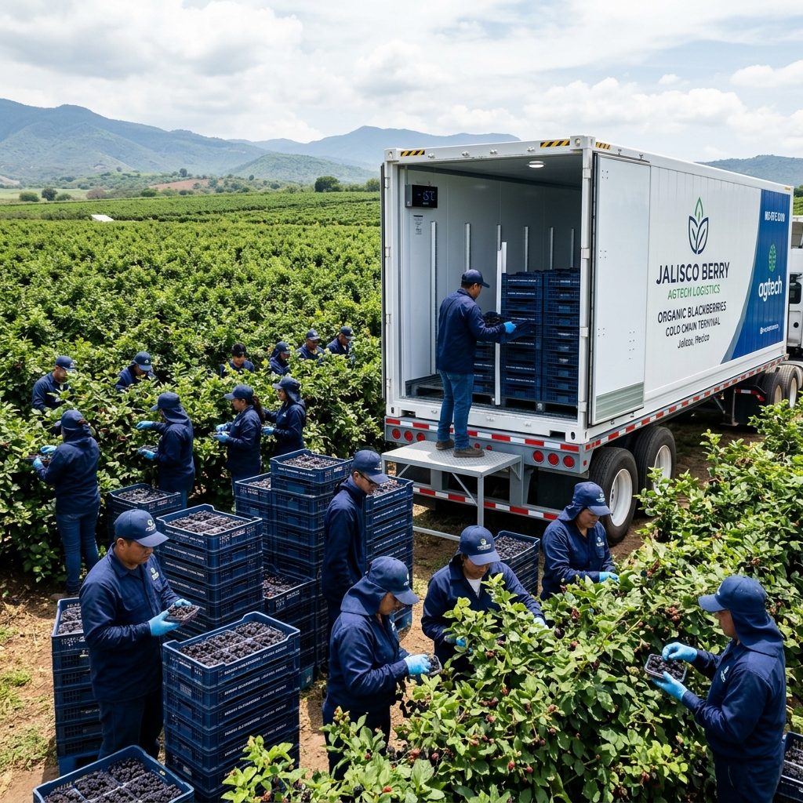

The Scale Wall in Agricultural Trade
For smallholder farmers worldwide, the barrier to global trade is not quality; it is arithmetic. A two-hectare organic fruit grower in Jalisco, Mexico, may produce some of the finest blackberries in the world. But an international buyer—such as a premium supermarket chain in Seoul or Tokyo—does not purchase in pallet increments. They demand cargo-container lots, consistent quality certifications, and strict cold-chain compliance.
To ship agricultural perishables across the Pacific, a farmer must meet the Minimum Viable Commercial Threshold (MVCT). For fresh berries, this is a single 20-foot refrigerated shipping container (reefer) containing approximately 10 to 12 tonnes of product.
For the individual smallholder who produces only two tonnes per harvest cycle, this threshold represents an insurmountable Scale Wall.
Historically, this fragmentation has forced farmers into two undesirable paths. They either sell their premium crop to local consolidating intermediaries (coyotes) at steep price discounts—losing all organic provenance in the process—or they attempt to form traditional agricultural cooperatives. But traditional co-ops require significant permanent capital, administrative overhead, and static bureaucratic rules, making them too slow and expensive for fluid B2B markets.
To show how a digital platform could resolve this coordination failure, we can examine a scenario where an expanded Cosolvent matching engine coordinates a dynamic, ad-hoc agricultural collective. The characters and details are fictional, but the market physics, logistics constraints, and system architectures are real.
Act I: The Fragmented Valley
Elena Gomez farms 1.5 hectares of certified organic blackberries in the highlands of Tapalpa, Jalisco, Mexico. Her crop—the Tupi variety, known for its firm structure and balance of sweetness and acidity—is managed using strict biological controls to meet pesticide-free standards. During her peak harvest window in late November, her land yields approximately 2.5 tonnes of premium fruit.
Elena is stuck. She has received inquiries from a broker in South Korea, but shipping two tonnes in a refrigerated container across the Pacific is economically suicidal; the freight and customs clearance costs would exceed the value of the fruit. She has no choice but to sell to local consolidators who mix her organic berries with conventional crops and ship them as generic commodity fruit. She receives 18 pesos per kilogram, while organic berries sell in East Asian markets for over 100 pesos.
THE TRADITIONAL AGRICULTURAL GAP
Elena's Farm (2.5t) ──┐
├──> Consolidator (Coyote) ──> Generic Bulk Export
Other Farms (2-3t) ──┘ (Payer of lowest price) (Loss of Provenance)
Twelve thousand kilometres away, in Seoul, South Korea, Min-Ji Kim is the director of global sourcing for Market Kurly, a premium, high-growth online grocery platform. Market Kurly’s brand is built on fresh, traceable, pesticide-free produce delivered to customers’ doors within 12 hours of arrival in the country.
Min-Ji wants to secure a weekly container of organic Mexican blackberries during the winter season. But she cannot source from individual smallholders—she cannot manage five separate contracts, five customs filings, and five different quality control checks for a single container. She needs a single, unified counterparty who can guarantee a full 12-tonne reefer container with verified organic documentation and continuous cold-chain logs.
The market is thin because the participants are structurally mismatched. Elena is too small to be seen; Min-Ji is too large to buy in fractions.
Act II: Assembling the Syndicate
The breakthrough occurs when FIRA (Fideicomisos Instituidos en Relación con la Agricultura), Mexico’s agricultural development bank, deploys an expanded instance of the Cosolvent platform called FIRA Agri-Match. FIRA acts as the platform sponsor, curating the local registry of certified organic growers, transport operators, and cold-storage facilities.
Elena onboarded using her smartphone, speaking conversationally in Spanish to an AI voice assistant. The assistant converted her speech into structured data, capturing her variety (Tupi), SENASICA organic certification, harvest timeline (late November), and estimated volume (2.5 tonnes).
The matching engine, upgraded with a Multi-Slot Clustering Algorithm, did not look for a single buyer for Elena. Instead, it scanned the Jalisco highlands for compatible, fragmented growers with overlapping harvest windows.
The engine identified five farmers in the Tapalpa valley—including Elena, Miguel Silva, and Sofia Ruiz—who collectively farmed 8.5 hectares of certified organic Tupi blackberries. Their combined estimated yield for the last week of November was 13.2 tonnes:
$$\text{Combined Yield} = \sum_{i=1}^{5} V_i = 13.2\text{ tonnes}$$
This total comfortably cleared the 12-tonne reefer container threshold.
Before introducing the farmers to Min-Ji in Seoul, the platform generated a Generative Match Story—a deal-specific, predictive narrative created from the combined matching profiles and FIRA’s agricultural database. The scenario laid out the operational mechanics:
- Consolidation Logistics: Raul Ortiz, a local operator registered on the platform with a 4-tonne refrigerated truck, would execute a scheduled run across the five farms on the morning of November 24, collecting the freshly picked berries in reusable plastic crates.
- Pre-cooling & Packing: The berries would be transported to the Tapalpa Cold Hub (a facility sponsored by FIRA), pre-cooled to 2°C, and stuffed into a 20-foot refrigerated shipping container.
- Compliance Sequence: The USDA-equivalent SENASICA organic export documentation and the Mexican phytosanitary certificates would be processed under a single consolidated customs filing. South Korea’s Animal and Plant Quarantine Agency (APQA) prior notice would be filed before the reefer departed the Port of Manzanillo.
- Financial Cost-Sharing: The ocean freight ($4,200), port handling fees, and customs clearance costs would be split among the five farmers pro-rata based on their delivered volume.
- Quality Escrow: Market Kurly would deposit the full contract value into a secure escrow. To hedge against the risk of fruit decay (a single bad pallet ruining the container), the escrow would hold back a 12% Quality Indemnity Margin until inspection at the Port of Busan.
AI-ENABLED AGGREGATION FLOW
Elena (2.5t) ──┐
Miguel (3.0t) ──┼──> Raul's Reefer Truck ──> Cold Hub ──> Port of Manzanillo ──> Seoul
Sofia (2.8t) ──┘ (Consolidation Run) (Pre-cool) (Reefer Export)
Other Farms ───┘
Elena read the scenario on her phone. For the first time, she saw the arithmetic of export: by cooperating with her neighbors, the shipping cost per kilogram dropped to a fraction of the Coyote’s discount. Min-Ji reviewed the scenario in Seoul and saw a structured, compliant, and traceable logistics path back to five specific certified farms, matching her brand promise.
Act III: Execution and Settlement
The platform opened a secure, multi-lingual channel. The AI Brokerage Agent translated Elena’s Spanish and Min-Ji’s Korean in real-time. Because both parties arrived at the channel having already reviewed the generated scenario, they bypassed the negotiation deadlock and went straight to coordinate the harvest schedule.
On November 24, the plan was executed. Raul Ortiz’s refrigerated truck consolidated the harvests from the five farms within a four-hour window, keeping the berries at a constant 4°C. At the Cold Hub, the fruit was inspected, pre-cooled to 2°C, and loaded into the reefer container. A single, consolidated export filing was submitted.
Twelve days later, the container arrived at the Port of Busan. The APQA quarantine inspectors verified the pesticide-free certificates and temperature logs, and conducted a physical inspection. The berries were firm, cold, and compliant.
Upon clearance, the escrow contract automatically released the funds. After deducting the shared logistics fees pro-rata, Elena received 72 pesos per kilogram—four times the price the local Coyote would have paid, and double her break-even export price.
What Makes This a Thin Market Solution?
The story of the Berry Syndicate illustrates how expanding the Cosolvent matching engine to support aggregation solves the core physics of participant fragmentation:
- Participant Fragmentation ($F_{endo}$): Individually, Elena and her neighbors were sub-scale, facing a high scale wall. The platform fabricated a virtual collective counterparty on-demand, allowing them to act as a single Tier-One supplier to Market Kurly without the permanent overhead of a legal cooperative.
- Opacity ($F_{endo}$): Traditional directories list only farm names. The platform’s dynamic schemas mapped real-time variables—harvest windows, certified organic status, and volume capacity—making the latent supply visible to the global market.
- Regulatory and Phytosanitary Complexity ($F_{exo}$): Exporting fresh fruit across borders involves a rigid sequence of government approvals. The platform’s Knowledge Slot—curated by FIRA and trade officials—sequenced these requirements into the compliance timeline, ensuring the smallholders met international standards.
- Dynamic Re-Routing and Resilience: A critical expansion of the Cosolvent engine was its handling of agricultural risk. If one of the five farms had experienced a localized pest outbreak before harvest, the matching engine would have automatically flagged the shortfall and scanned neighboring certified farms to fill the gap, preserving the 12-tonne container threshold and protecting the deal from default.
By coordinating fragmented supply chains at the transaction level, thin market engineering proves that small farms do not need to grow larger to reach global markets—they simply need to be coordinated.
Disclaimer: This is a fictional market scenario generated for demonstration purposes. Elena Gomez, Min-Ji Kim, and Raul Ortiz are fictional characters. FIRA (Fideicomisos Instituidos en Relación con la Agricultura) is a real development institution in Mexico supporting agricultural development.
Learn more about Thin Market Theory · Explore the MarketForge Platform · Understand the Cosolvent Architecture